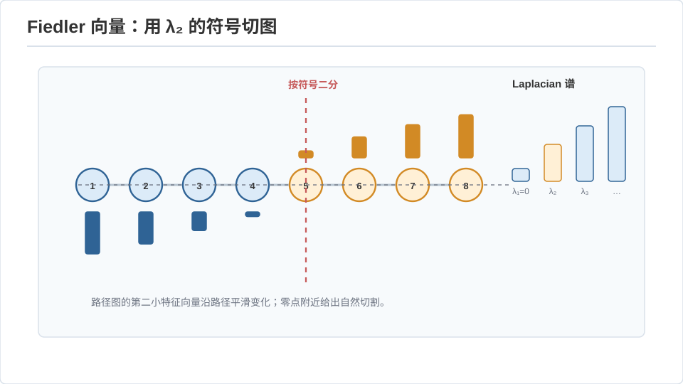
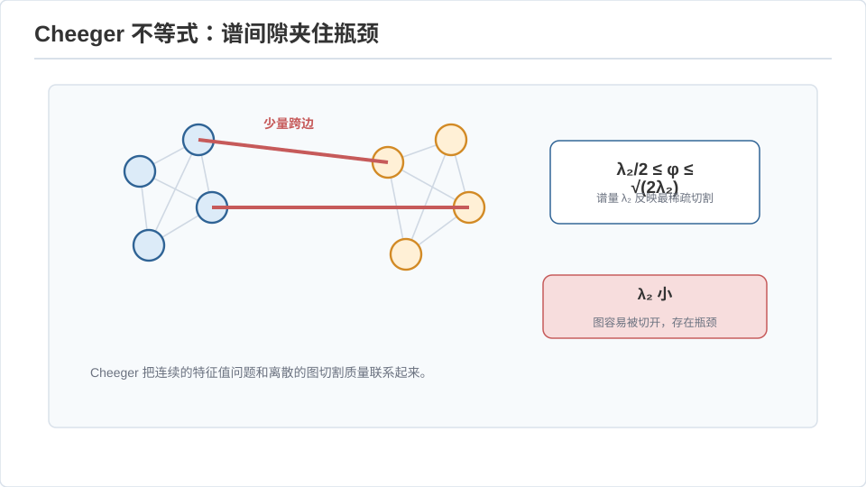
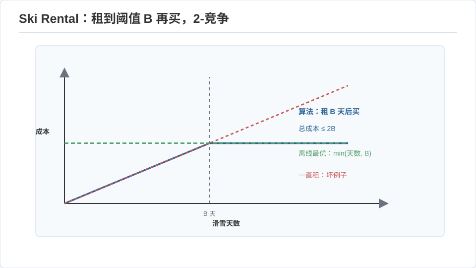

高级算法 II · 谱图论与在线算法
对标：MIT 6.854 / Spielman Spectral Graph Theory / 竞争分析经典 ｜ 前置：adv-01、数学站线代（特征值、Rayleigh 商）、概率线 两个高级主题，各自展示一种"数学直接变算法"的美：谱图论把图的组合性质编码进拉普拉斯矩阵的特征值（你在线代里学的 Rayleigh 商直接上岗）；在线算法处理"必须在看到未来前决策"的问题，用竞争比量化"不知未来的代价"。
1. 图拉普拉斯：图的线性代数化身
图 \(G\) 的拉普拉斯矩阵 \(L = D - A\)（\(D\) 度对角阵、\(A\) 邻接阵）。它是本段主角，性质全从二次型来：
——半正定，且这个式子把"相邻点取值差"求和：\(L\) 度量一个点标注函数在图上的"不光滑度"。
特征值 \(0=\lambda_1\le\lambda_2\le\cdots\le\lambda_n\) 的意义： - \(\lambda_1=0\)，重数 = 连通分量数（每个分量的示性向量是零特征向量）。 - \(\lambda_2\)（代数连通度 / Fiedler 值）> 0 ⟺ 图连通；它越大图越"难切开"。对应特征向量（Fiedler 向量）的正负号给出一个好的图二分——谱聚类的原理。

Cheeger 不等式【骨架 + 直觉】：定义电导（conductance）\(\phi\) = "最省的稀疏割"，则
特征值夹住了组合的割——线代量 \(\lambda_2\) 与组合量 \(\phi\) 互相控制。这是"用特征向量做聚类/分割"可靠的理论依据（🔗 数学站线代的 Rayleigh 商 \(\lambda_2 = \min_{x\perp\mathbf 1}\frac{x^TLx}{x^Tx}\) 在这里直接就是"最光滑的非平凡标注"）。

应用全景：谱聚类（ML）、PageRank（随机游走的稳态 = 特定矩阵主特征向量，🔗 math 站 model 线与 grad-math 马尔可夫）、图画法、Laplacian 求解器（Spielman–Teng 近线性时间解 \(Lx=b\)，现代算法高峰）、expander 图（\(\lambda_2\) 大 = 稀疏但强连通，伪随机与纠错码的基石）。
2. 随机游走与混合时间
图上随机游走的转移矩阵 \(P = D^{-1}A\)，稳态分布 \(\pi_v\propto\deg(v)\)。混合时间（走多久才接近稳态）由谱隙 \(1-\lambda_2(P)\) 控制：隙大则混合快。这把"游走多快遍历图"翻译成特征值问题。expander = 谱隙大 = 快速混合——MCMC 采样（🔗 physics 站 comp-01 Metropolis、grad-math 马尔可夫）收敛快慢的完整解释就在这里。
读法："图的动力学（游走）与图的几何（割）都被同一组特征值决定"——谱图论的中心思想，一句话记住。
3. 在线算法：不知未来如何决策
在线问题：输入逐个到达，每步必须不可撤销地决策，看不到后续。用竞争比衡量：
——"不知未来"的代价的最坏定量。
样板一：缓存/分页置换 内存装 \(k\) 页，缺页要换出一页——换哪个？LRU / FIFO 都是 \(k\)-竞争（最坏是最优的 \(k\) 倍），且这是确定性算法的下界。随机化 marking 算法把竞争比降到 \(O(\log k)\)——又一次随机性打败最坏情况（呼应 algo-03）。这直接是 csapp-02 缓存、os-03 页面置换的理论天花板。
样板二：租还是买（ski rental） 滑雪租 $1/天、买 $B，不知还要滑几天——"先租到累计花费 = \(B\) 时再买"是 2-竞争，且随机化能到 \(\frac{e}{e-1}\approx1.58\)。这个玩具模型是一切"何时从租用切换到自建"决策的原型（云上按量付费 vs 包年、连接池、缓存预热……）。

样板三：在线学习 / 专家问题 \(n\) 个专家每天给建议，你要跟着谁？加权多数 / Multiplicative Weights：按历史表现给专家指数加权，跟随加权投票——遗憾（regret）\(O(\sqrt{T\log n})\)，趋于最优专家。这个 MW 框架惊人地通用：它统一了 boosting（ML）、求解零和博弈（🔗 math 站博弈论）、近似 LP、甚至 AdaBoost——"指数加权 + 在线更新"是一把万能钥匙。
4. 势函数法：在线与摊还分析的统一工具
怎么证竞争比 / 摊还复杂度？势函数 \(\Phi\)：定义一个刻画"当前状态好坏"的量，证明"每步真实代价 + 势变化 \(\le \rho\times\) 最优代价"，累加即得竞争比。摊还分析（动态数组倍增、并查集、伸展树）用同一招：单次操作可能贵，但势的涨落把成本摊平。势函数是"局部不等式累加成全局界"的通用范式（🔗 与物理站的李雅普诺夫函数、能量法同构——你在物理站见过这个思想）。
5. 练习与要点
例 1（Fiedler 手算） 一条 4 点路径图，写出 \(L\)，求 \(\lambda_2\) 与 Fiedler 向量——你会看到向量沿路径单调（正负各半），据此切成两段正是最自然的二分。谱聚类在最小例子上现形。
例 2（ski rental 最优性） 证明任何确定性"租到第 \(d\) 天买"策略的竞争比 \(\ge 2-\frac1B\)：对手让你刚买完就不滑了。竞争分析的对手视角——最坏情况是被精心构造的。
例 3（MW 一题多解） 用 Multiplicative Weights 求解一个 2×2 零和博弈的近似均衡：把行策略当"专家"、列的最优反应当"损失"，迭代加权收敛到 minimax 值（🔗 博弈论线）——同一个算法，昨天做专家预测，今天求纳什均衡。\(\blacksquare\)
下一页：计算理论 I——自动机的层级与可计算性的边界，停机问题为什么无解。